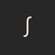

Catterall
Home
Projects
Music
Opus One: Preludes
Opus Two: Rhapsodies
Opus Three: Kūlóu Shé
Opus Four: Prayers
Catterall

Kyle James Catterall, a software developer from the UK
Opus Two: Rhapsodies
Rhapsody No.1 in E♭ Major
Rhapsody No.1
E♭ Major
Length: 05:31
File Size: 5.06MB
View
Download